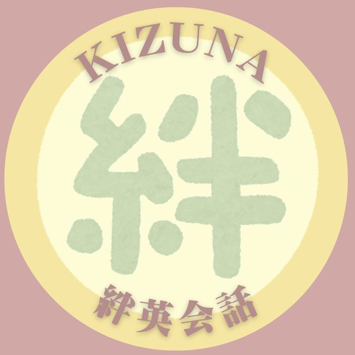
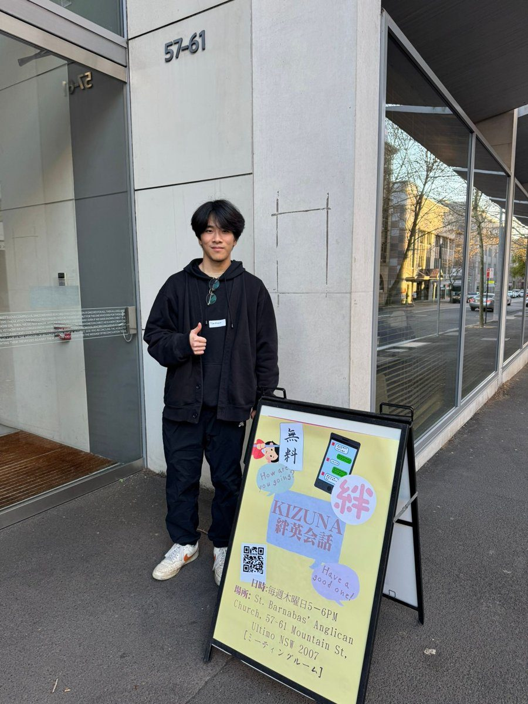
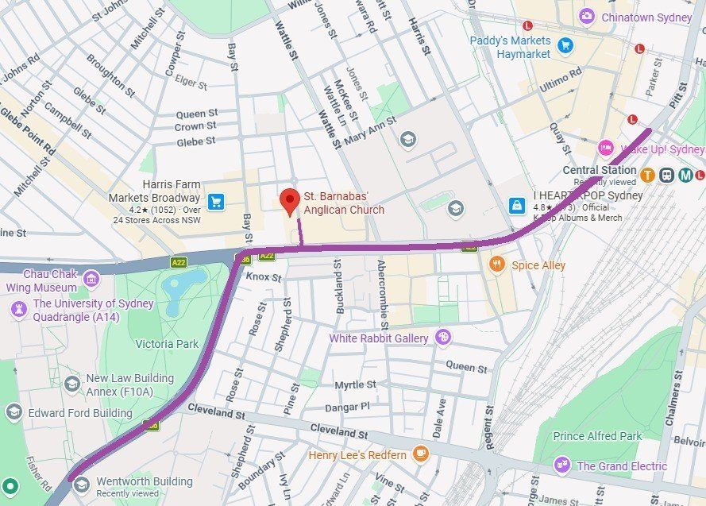
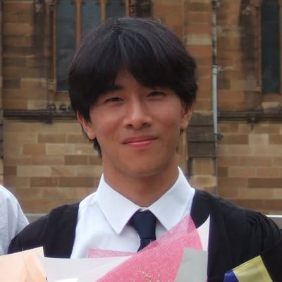
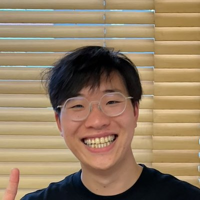
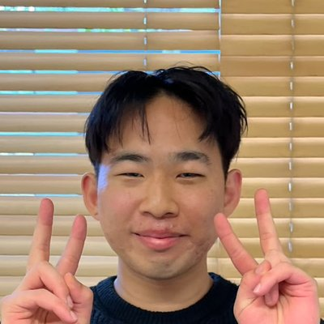

はじめての方へ
シドニーでの毎日のことを、英語でおしゃべりできる小さなコミュニティです。うまくいったことは一緒に喜んで、大変なことは一緒に励まし合う仲間がいます。自分のペースで大丈夫。毎週話しているうちに、少しずつ自信がついていきます。
当日の流れ
毎週木曜 17:00〜18:00｜参加無料。決まった時間割ではなく、その日の様子に合わせてゆっくり進めます。
話すのが不安でも大丈夫。たくさん話しても、少しだけでも、自分のペースでOK。初めての方も、久しぶりの方も大歓迎！
- 🚪
- 16:50から Mountain St側のドアの前で、ネイサンかリアンが待っています
- ☕️
- 自己紹介・おしゃべりタイム（お互いを知る時間）
- 🎲
- 今週のテーマでゲームやアクティビティ
- 💬
- 英語ネイティブとマンツーマンでおしゃべり
- 📖
- 最後に、英語の読み練習：バイブルの短い一節を読んで話し合おう（10分以内）
- 👋
- 18:00 英会話終了。ここで帰ってもOK！
- 🍛
- 夕食（自由参加。初回無料、2回目から$14）
- 📚
- バイブルスタディ（自由参加。日本語と英語でバイブルを読む会）
会場・入口


主催者の紹介
リアン（Riaan）
はじめまして、リアンです。Kizuna英会話を始めました。OMFというクリスチャンの団体で働いていて、2020年に日本に引っ越し、4年間住んでいました。シドニーでは、クローズネスト日本人キリスト教会にも関わっています。
初めて日本に行った時は日本語が全く分からず、札幌での2年間は、ほとんどの時間を日本語の勉強に使いました。素晴らしい先生たちに恵まれましたが、自然に、ストレスなく日本語を練習できる場所や、人の目を気にせずに自分の悩みを話せる場所は、なかなか見つかりませんでした。
シドニーに戻ってきて、あの時の自分がほしかった場所を、今度は日本人の皆さんのために作りたいと思いました。英語を気軽に練習できて、悩みも安心して話せる場所です。まだ始まったばかりの小さなグループですが、だからこそ一人ひとりとゆっくり話せます。そんな場所を、一緒につくっていきませんか？
出身は南アフリカで、シドニーに住んで16年ちょっとになります。日本に行く前は、エンジニアとして、人工内耳で知られる医療機器メーカーCochlear（コクレア）で働いていました。オーストラリアでの就職や仕事について聞きたいことがあれば、気軽に声をかけてください。
サーフィン、ゲーム、海沿いのきれいな道を歩くのが好きです。結婚して20年以上になり、妻とゴードンに住んでいます。
ボランティアの紹介
毎週木曜日に待っている仲間です。

こんにちは！ネイサンといいます。シドニー大学で情報工学と日本語を専攻し、昨年卒業しました。現在は就職活動中です。趣味はバレーボールやアルティメットをすること、そしていろいろな音楽を聴いたり楽器を弾いたりすることです。よろしくお願いします！

はじめまして、エイドリアンです。ソフトウェアの仕事をしていて、趣味は音楽です！ピアノを弾いて、バンドでJポップやアニソンを演奏します。

こんにちは、アレックスです。現在はシドニー大学の学生です。趣味は、友達とバスケすることと、登山です。
よくある質問
英語に自信がないけど大丈夫？
大丈夫です。一対一なので自分のペースで話せます。間違えても誰も気にしません。
本当に無料？
英会話は無料です。夕食は自由参加で、初回無料、2回目から$14です。
バイブルの時間って何？
英会話の最後に、英語の読み練習としてバイブルの短い一節を一緒に読んで話し合います（10分以内）。バイブルは世界で一番売れている本で、ノアの箱舟など有名なお話もたくさん入っています。ボランティアのみんなはクリスチャンなので、バイブルについて質問があれば、気軽に聞いてください。
毎週参加しないといけない？
いいえ。来られる日だけ予約してください。
友達と一緒でもいい？
もちろん！お友達もそれぞれ予約してね。お友達には linktr.ee/kizunaeikaiwa を教えてあげてください。
遅れそう・行けなくなったら？
確認メールに返信してください。WhatsAppグループに入っている方は、WhatsAppで知らせてもOKです。
何を持っていけばいい？
手ぶらでOKです。
木曜日に会えるのを楽しみにしています！
予約は参加したい日を選ぶだけ（1分）。InstagramのDMで「参加予約」と送ってもOK。